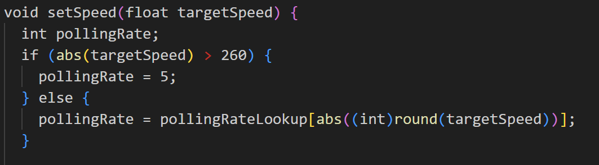

Differential Swerve Drive Module
2024 | In Progress

How it works:
A swerve module is a wheel that has two axes of rotation instead of one, meaning the wheel can spin forward and backward but can also be individually steered.
A differential swerve drive utilizes two motors and cleverly arranged gears to achieve this as shown below:
If the two motors spin at the same speed in opposite directions, the wheel will spin like normal
If the motors spin at the same speed in the same direction, the entire wheel will steer


The code:
This project had two main aspects, the low level code for the motor controllers, and the high level code to control the module as a whole
Low level code:
Check it out!The motors used are N20 DC motors with encoders. The two motors are controlled with an L293D chip that allows for a range of inputs that will vary the voltage. Because of the need for precise control of the motor speed, we need encoders on the motor to monitor the number of revolutions and adjust the speed accordingly.

The speed is controlled with a PID feedback loop, which works by finding the error term (the distance away from the setpoint) as a function of time, the derivative of the error term, and the integral of the error term. In this case our setpoint would be a certain RPM:

Using this structure, it was quite straightforward to program a simple position PID controller. The complexity came in when I tried to implement a speed controller.
Programming a speed controller
Programming a speed controller consisted of using the same PID loop described above, but instead using (target speed - current speed) as our e(t). The problem came when calculating the current speed, which was found using the formula:
(current encoder count - previous encoder count)/elapsed time.

The problem was that the clock cycles ran faster than our encoder ticks, especially at low speed, meaning the current speed would read as zero and the PID would overcompensate. This would lead to shaky movement patterns, which can be observed in this graph:

This problem could be solved by polling for the speed every few cycles, instead of every cycle. Implemented as follows

The following results were found with a poll rate of 30, meaning that the speed was calculated every 30 clock cycles
The problem with polling every few cycles is apparent: the loop is slow to react and the adjustments are blocky. This presented a new challenge of finding the lowest possible poll rate so that our PID curves would be smooth, but not low enough that our PID loop would report false zeroes. Additionally, I observed that different speeds had different optimal poll rates. So I came up with the solution of having a dynamic poll rate.
With this idea, I used a few test values to construct an equation relating speed to poll rate.

Using this equation presented a new problem, as the microcontroller would have perform computations every clock cycle, which slowed it down greatly, and since I eventually wanted the target speed to dynamically change with user input, I created a lookup table with ~400 entries so that polling rate values could be retrieved with O(1) time complexity
